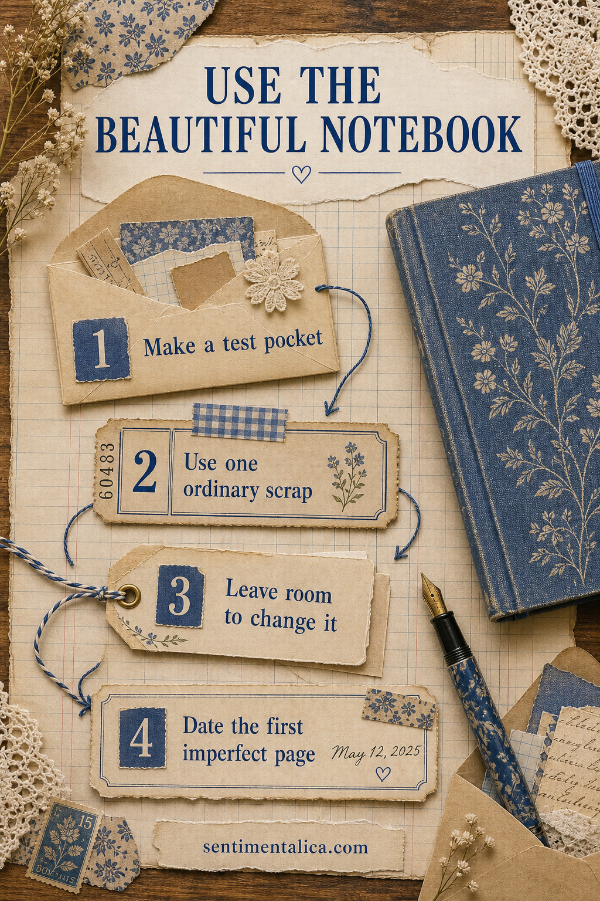
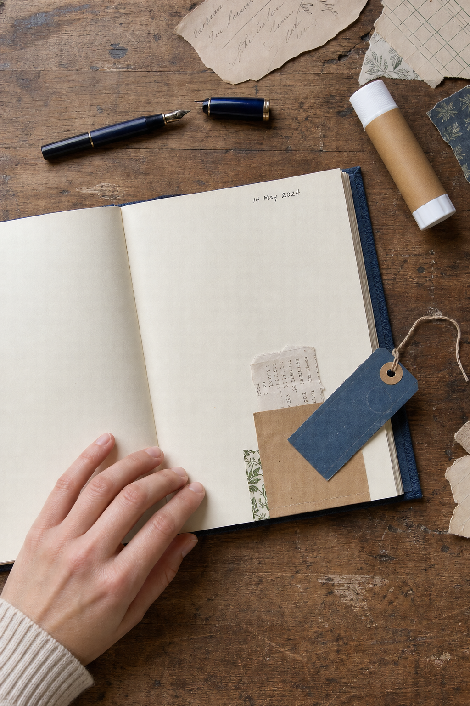

A beautiful notebook can become strangely difficult to use. The better the paper feels and the more carefully the cover was chosen, the more the first page begins to feel like a test. You wait for an important project, a prettier idea, or a version of yourself who never makes crooked marks. Meanwhile, the notebook stays perfect and completely absent from your life.
The way through is not to become less careful. It is to make the beginning small enough that care no longer turns into fear. Your first page only needs to prove that this book belongs to the present.

Make a test pocket
Instead of decorating the whole first page, attach a small paper pocket near one corner. Use a plain envelope, a folded book page, or a scrap of kraft paper. Keep the attachment light at first. A pocket gives the page a useful job without requiring a grand design, and it can hold ideas while the rest of the notebook develops.
Use one ordinary scrap
Do not begin with the rare ribbon or the picture you have been saving for years. Choose something replaceable: a receipt fragment, a tea wrapper, a torn line from an old book, or a little piece of packaging. Ordinary material lowers the stakes. It also gives the notebook a first connection to real life rather than an imaginary perfect future.
Leave room to change it
Place one loose tag inside the pocket instead of gluing every element flat. Write a temporary title in pencil. Let half the page remain empty. When a beginning can still move, it does not feel like a final decision. You can add a photograph next week, cover a word later, or allow the open space to stay open.

Date the first imperfect page
A date changes the meaning of imperfection. The uneven edge and hesitant line become evidence of where you began. Write the day in a small corner, then add one true sentence. Try: “I wanted to use this before I felt ready.” That sentence is enough. It gives the page a voice without turning it into an essay.
Give yourself one rule for the next three pages
Choose a rule that protects momentum rather than appearance. You might spend no more than ten minutes, use only scraps already on the desk, or stop after one picture and one line. A useful rule closes the endless choice loop. It also lets the notebook teach you what it wants to become through use.
- If the page feels too empty: add a narrow border, not another focal image.
- If the page feels too precious: tear one edge on purpose.
- If you dislike the result: tuck a note over it instead of removing the page.
- If you still cannot begin: work on the second page and return later.
Use a free picture as low-pressure practice
If choosing the first image is part of the problem, take one flower from the 100 free floral pictures. Print it at a small size, crop it differently than expected, and pair it with one scrap from your own day. The flower supplies a gentle starting point. Your handwriting, date, and ordinary paper are what make the page yours.
A notebook does not become precious because every page succeeds. It becomes precious because the pages remember your hands, your changes of mind, and the days you decided to make something anyway. Begin with a pocket, an ordinary scrap, and one honest line. The beautiful book has already waited long enough.
For more calm ways to begin, browse the Sentimentalica journal archive.